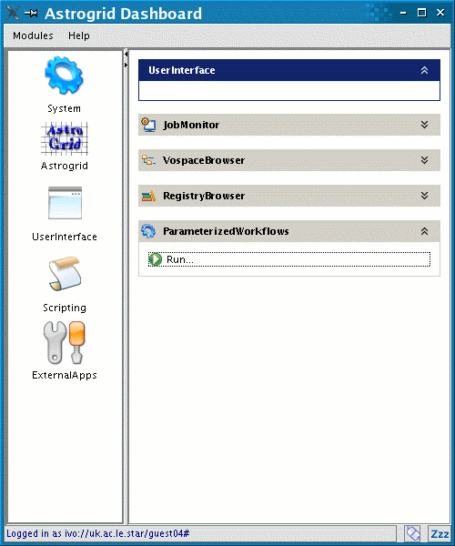
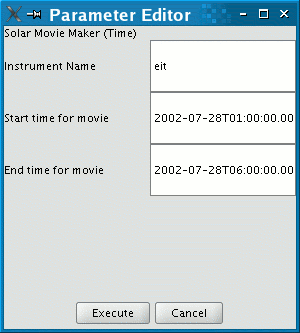
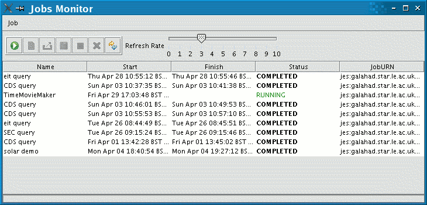

Solar Movie Maker Help
Silvia Dalla, 03 Feb 2005
Summary
This Astrogrid science service allows a user to make a movie of solar
images by means of a simple interface. It is available via the Workbench
on the Portal home page.
Datasets are:
Currently the movie maker takes as input an instrument name and a time
interval for the movie.
We plan to develop also an Event-based movie maker (See MovieMakerNext
for details).
How to run the Solar Movie Maker
From the portal Home, launch the AstroGrid Dashboard and click on
User Interface. Click on Parameterised Workflow and
Run.

Type in login details (same as the ones used to log into the portal),
then choose the Solar Movie Maker (Time) template workflow. Now specify
your input parameters:
Input parameters
- Instrument name: either 'trace' or 'eit'
- Start date/time and end date/time (yyyy/mm/ddThh:mm:ss.000)

Click on Execute. This launches the workflow. You will be asked
if you want to save the workflow document - saving the document into
myspace allows to load the workflow inside the portal, to view it / modify it.
The Job Monitor window opens:

When the status of the job changes to 'COMPLETED' you can donwload
the output movie from myspace, from the votable directory. The name of
the output movie will depend on your input parameters, e.g. for the ones
in the picture above it will be: eit2002-07-28T01:00:00.000.mpg .
Usage Notes:
-
Currently the source of TRACE data is the MSSL/SURF archive, which holds
a subset of the complete TRACE archive. Therefore, depending on the input
start/end times, in some cases no movie is produced and the workflow will
terminate in 'ERROR'. We are in the process of linking with the RAL TRACE
archive.
-
TRACE data are archived in hourly files (also called 'tri' files). At
present the movie maker produces TRACE movies of minimum duration 1 hour.
Main workflow steps
-
Start and end time are written into a template query and the query is
sent to the data centre.
-
Output of the query is sent to the AstroGrid SolarMovieMaker tool which
downloads the files to MySpace and runs a set of SolarSoft mapping software
routines that take the images and combine them into an mpeg movie.
-
Output mpeg is sent to user's myspace.
Workflow returns no movie if:
- End time is before start time
- Input start and end time would result in a huge movie
- Query to instrument dataset returns no files